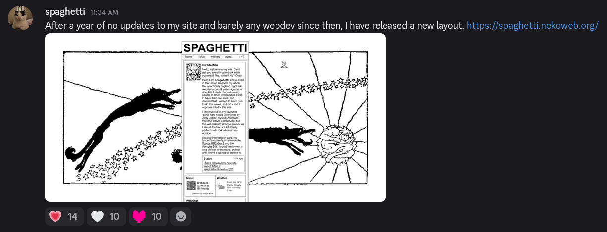

Making of my new layout.
Making this new layout was really fun, I hadn't really done any webdev for a whole year since I last updated my site - but I randomly decided about 2 weeks ago that I wanted to do some again, so I made a whole new layout/site. I am quite proud of how it turned out tbh, I like the monochromatic theming that I went with, and all the images that I found that really fit with the site - especially Far away and long ago by Willy Pogany.
I'm glad at the response I've got from the community aswell, lots of reactions from my release post in the Nekoweb discord (pictured) and 4 new followers on Nekoweb!
